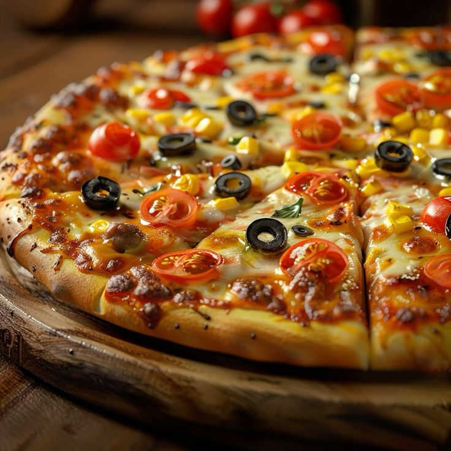
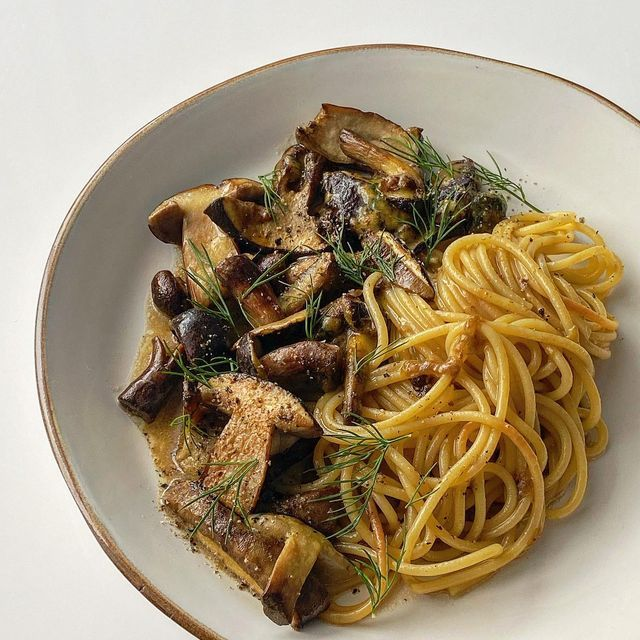
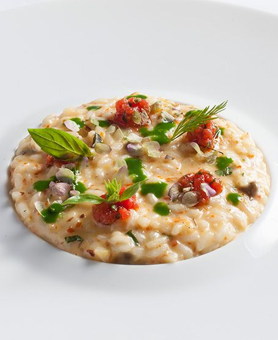

피자 (Pizza)🍕
피자는 얇은 반죽 위에 토마토 소스, 치즈, 다양한 토핑을 올려 구운 이탈리아의 대표적인 요리
특징:
-마르게리타 피자가 유명하며, 신선한 모짜렐라 치즈, 토마토, 바질을 사용해 만들어짐
-피자의 반죽은 부드럽고 쫄깃하며, 나폴리식 피자는 얇고 바삭한 특징을 가짐

파스타 (Pasta)🍝
파스타는 이탈리아 전통 면 요리로, 다양한 형태와 소스로 제공됩니다. 대표적인 파스타에는 스파게티, 펜네, 라자냐, 리가토니 등이 있음.
대표적인 소스종류:
-볼로네제 소스: 고기와 토마토 기반의 진한 소스
-알프레도 소스: 크림과 버터로 만든 부드러운 소스
-페스토 소스: 바질, 마늘, 올리브유로 만든 상큼한 소스

리조또 (Risotto)🫕
리조또는 쌀을 사용한 이탈리아의 전통적인 요리로, 아르보리오 또는 카르나롤리와 같은 특수한 쌀을 사용해 만듦
특징:
-크리미한 질감이 특징이며, 버터, 치즈, 육수와 함께 조리
-리조또의 맛은 주로 육수나 와인, 크림 등으로 풍부하게 만들어지며, 여러 가지 재료와 조화를 이룸.